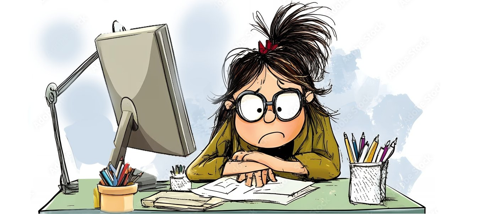

Hello
This blog belongs to me, a proud programmer who talks more to computers than humans. I'm going to share my daily life through this medium with you, whether you like it or not (just kidding... or am I?).
I've definitely gone through some very tough moments—like when my code worked on the first try and I had a small identity crisis.
Every day brings something new: bugs that magically fix themselves, coffee that vanishes too quickly, and those glorious moments when I Google my own error and find my own Stack Overflow question from two years ago. So I thought, why not share all this chaos, joy, and caffeine-fueled nonsense with you?
Welcome to my world—strap in, it’s gonna be a wild ride!
